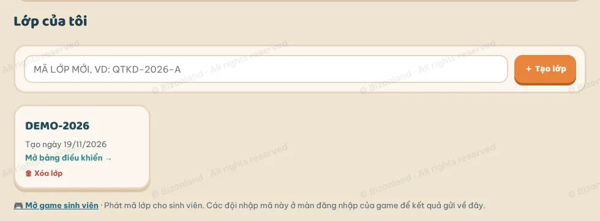
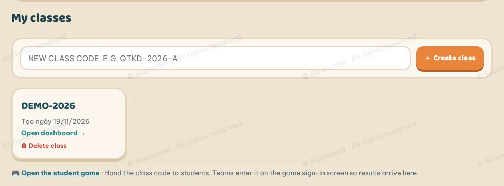

Bước 1 · ≈ 3 phút
Tạo lớp
Mỗi lớp có một mã lớp. Sinh viên dùng mã này để kết quả của đội về đúng lớp của bạn.
Việc cần làm
Mở Trang Giảng viên và đăng nhập (lần đầu thì bấm «Chưa có tài khoản? Tạo mới»). Ở mục «Lớp của tôi», gõ mã lớp mới, ví dụ QTKD-2026-A, rồi bấm «＋ Tạo lớp». Muốn xem trước mà chưa có tài khoản: bấm «Dùng thử với lớp mẫu DEMO-2026».
Lỗi hay gặp
Mã lớp có dấu tiếng Việt hoặc khoảng trắng, sinh viên gõ lại không khớp.
Cách xử lý: Chỉ dùng chữ không dấu, số và dấu gạch ngang. Mã luôn được viết hoa.

